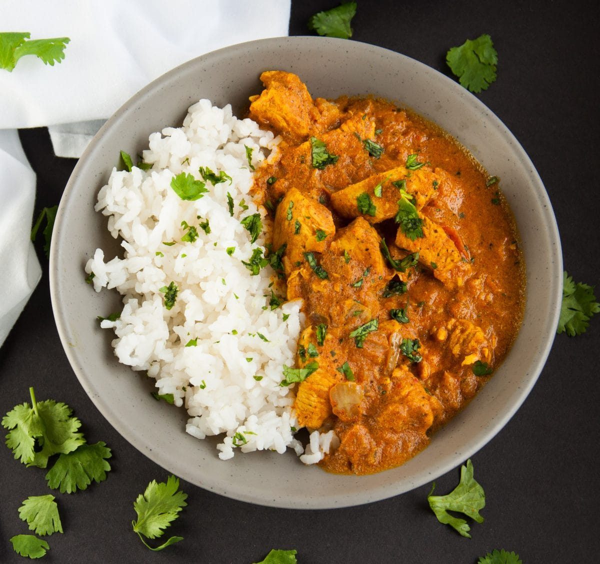

Czas przygotowania: do 30 minut
Cebulę pokroić w kostkę, na dnie dużej patelni rozgrzać olej. Dodać cebulę, gorczycę i sól, smażyć na średnim ogniu przez 4 – 5 minut. Jeśli nie macie gorczycy przeczytajcie porady.
Do podsmażonej cebuli dodać kumin, kurkumę, chili oraz cynamon. Zamieszać, smażyć przez kilkanaście sekund i dodać kokosowe mleko, pomidory, sos sojowy oraz cukier. Zwiększyć ogień na maksymalny i gotować przez 5 – 8 minut, czyli do momentu, aż sos się lekko zagęści i zrobi się błyszczący.